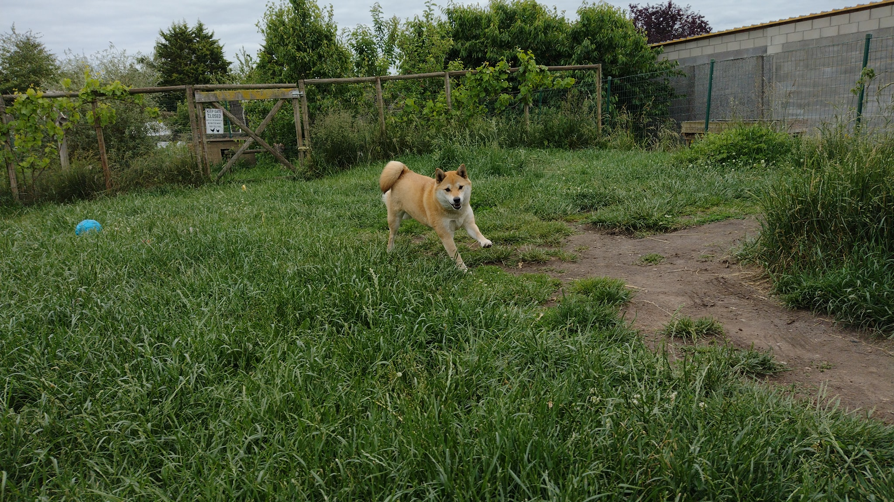
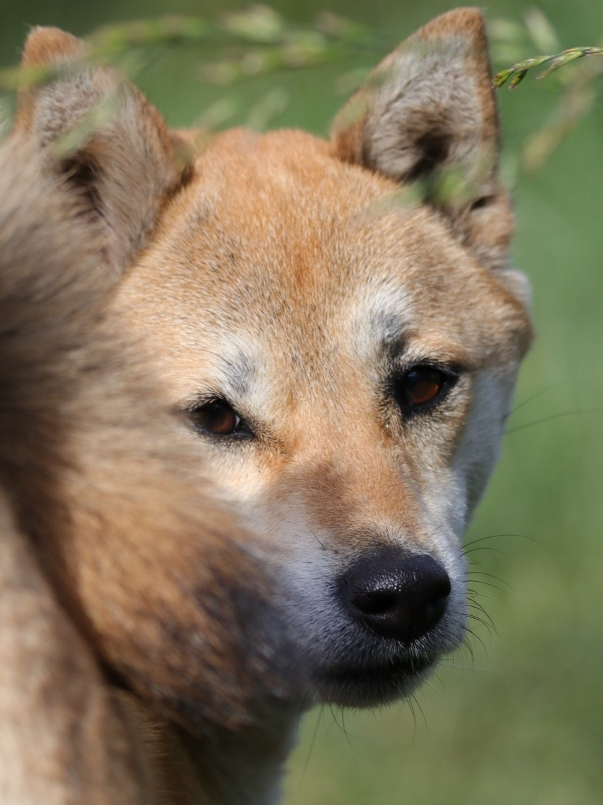
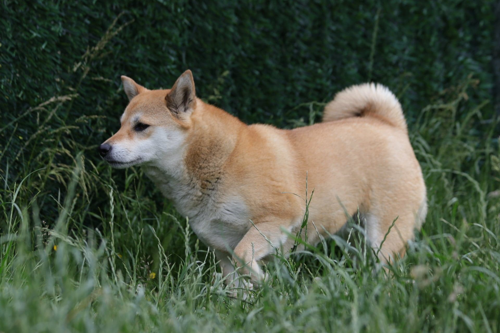

Zina is een Shiba dame van 6 jaar.
Zij zoekt een thuis met de nodige ervaring, zonder kinderen en andere huisdieren.
Zina is aanhankelijk naar haar familie.
Ze is geen fan van mensen die haar over haar grenzen dwingen en durft dan van zich af te bijten.
Bij haar huidig gezin zijn er problemen gerezen tijdens de wandelingen.
Om deze reden draagt Zina een muilkorf buiten. Dit laat ze goed toe.
Details hierover bespreken we met mensen die effectieve interesse hebben.
Zina kan in het begin angstig reageren bij bruske bewegingen.
Verder is ze een grote schat, immense knuffelkont en geweldige, speelse Shiba dame.
Genieten in de Shibaproof tuin is een must.
Er mag geen rechtstreeks contact met dieren van buren mogelijk zijn.
Zina zoekt vooral een fijne, voor altijd rustige thuis waar ze zich veilig kan voelen en genieten.
Denk jij de match voor Zina te zijn?
Mail dan naar shibarescuevzw@gmail.com


|